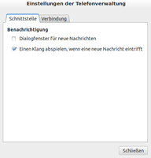

GNOME-Bluetooth
Dieser Artikel wurde für die folgenden Ubuntu-Versionen getestet:
Ubuntu 16.04 Xenial Xerus
Zum Verständnis dieses Artikels sind folgende Seiten hilfreich:
Damit man mit den hier beschriebenen Bluetooth-Anwendungen arbeiten kann, muss zunächst die Bluetooth-Schnittstelle eingerichtet werden.
Einstellungen¶
Mit Ubuntu 8.04 Hardy Heron ist die Benutzung einer Bluetooth-Schnittstelle sehr vereinfacht worden. Ist der Bluetooth-Empfänger korrekt im System eingebunden, so findet man üblicherweise im Benachrichtigungsfeld des GNOME- und des Unity- Panel ein Bluetooth-Symbol. Macht man  darauf und wählt "Bluetooth-Einstellungen..." aus, so gelangt man in die Konfigurationen zu Bluetooth. Alternativ kann man diesen Dialog auch über "Systemeinstellungen -> Geräte -> Bluetooth" öffnen [3]. In der Konfiguration kann man Sichtbarkeitseinstellungen für den Rechner vornehmen, bekannte Geräte eintragen und einstellen, wann das Bluetooth-Symbol angezeigt werden soll.
darauf und wählt "Bluetooth-Einstellungen..." aus, so gelangt man in die Konfigurationen zu Bluetooth. Alternativ kann man diesen Dialog auch über "Systemeinstellungen -> Geräte -> Bluetooth" öffnen [3]. In der Konfiguration kann man Sichtbarkeitseinstellungen für den Rechner vornehmen, bekannte Geräte eintragen und einstellen, wann das Bluetooth-Symbol angezeigt werden soll.
Falls das Symbol nicht im Benachrichtigungsfeld erscheint, so muss man das zugehörige Applet zunächst starten. Dazu wird bei Unity Windows gedrückt und der folgende Befehl eingegeben:
bluetooth-applet
Der Haken vor den Text "Den Bluetooth-Status in der Menüleiste anzeigen" muss gesetzt sein.
Neues Gerät konfigurieren¶
Ubuntu 16.04¶
Mit das Bluetooth-Symbol im Panel und danach "Bluetooth-Einstellungen..." wählen. Es öffnet sich das Fenster "Bluetooth", hier
+ betätigen und es geht das Fenster "Suche nach Geräten" auf. Wenn das Gerät gefunden wurde (siehe auch Bluetooth Pairing), dieses auswählen. Es wird dann eine Verbindung hergestellt, dabei muss die PIN eventuell auf dem anderen Gerät bestätigt werden.
Dateien an Gerät senden¶
Ubuntu 16.04¶
ist unter der Überschrift "Dateien vom PC zum Mobiltelefon" beschrieben.
Dateien auf Gerät durchsuchen¶
Mit  auf das Bluetooth-Symbol im Panel kann man die Option "Dateien auf Gerät durchsuchen" auswählen. Im nächsten Schritt wählt man das zu durchsuchende Gerät und klickt "Verbinden". Danach sollten sich die Geräte also verbinden, der Dateimanagernautilus startet sich und man kann das Gerät wie einen externen Speicher durchsuchen.
auf das Bluetooth-Symbol im Panel kann man die Option "Dateien auf Gerät durchsuchen" auswählen. Im nächsten Schritt wählt man das zu durchsuchende Gerät und klickt "Verbinden". Danach sollten sich die Geräte also verbinden, der Dateimanagernautilus startet sich und man kann das Gerät wie einen externen Speicher durchsuchen.
Dateien mit Nautilus senden (Ubuntu 12.04 )¶
Methode 1¶
Dafür muss das Paket
nautilus-sendto
 mit apturl
mit apturl
Paketliste zum Kopieren:
sudo apt-get install nautilus-sendto
sudo aptitude install nautilus-sendto
installiert [1] sein. Über den Dateimanager Nautilus kann man nun Dateien an das Mobilgerät senden. Dies geschieht über den Eintrag "Senden an ..." im Kontextmenü, welches mit aufgerufen wird. Hier wählt man nun als Übertragungsart "Bluetooth" aus. Die Datei kann auch direkt "gepackt" werden und als komprimierte Datei z.B. im Format zip oder tar.gz gesendet werden. Dazu einfach das Kästchen "Gepackt senden als" anhaken und darunter den Namen des Archivs und den gewünschten Archivtyp wählen. Mögliche Empfänger sollten automatisch gefunden werden. Dies kann jedoch ein paar Sekunden dauern. Am Mobilgerät wird nun eine ankommende Datei gemeldet, deren Empfang man bestätigen muss. Gleichzeitig erscheint auf dem Bildschirm eine Anzeige, dass die Datei versendet wird.
Dateien an den PC senden¶
Natürlich ist es auch möglich, Dateien vom Mobiltelefon aus an den PC zu senden. Dazu wählt man die Datei aus und versendet sie via Bluetooth. Wenn eine Verbindung besteht und die Bluetooth-Dateiverteilung aktiv ist, erscheint auf dem Bildschirm eine Abfrage, ob man die eingehende Datei akzeptieren möchte. Die empfangene Datei wird im persönlichen Ordner abgelegt. Ist der Dateiversand nicht möglich so gibt es Dateien über Bluetooth empfangen eine weitere Möglichkeit.
GNOME-Phone-Manager (Ubuntu 12.04 )¶
Der GNOME-Phone-Manager  erlaubt das Empfangen und Schreiben von SMS-Textnachrichten über das Mobiltelefon.
erlaubt das Empfangen und Schreiben von SMS-Textnachrichten über das Mobiltelefon.
Installation¶
Der GNOME-Phone-Manager wird mit folgendem Paket installiert [1]:
gnome-phone-manager (universe, [2])
mit apturl
Paketliste zum Kopieren:
sudo apt-get install gnome-phone-manager
sudo aptitude install gnome-phone-manager
Es wird ein Eintrag im GNOME-Menü unter "Anwendungen -> Systemwerkzeuge" namens "Telefonverwaltung" erzeugt.
Einrichtung¶
Startet man das Programm, so sieht man (oben rechts) im GNOME-Panel ein kleines Telefon-Symbol. Mit öffnet man das Kontextmenü und wählt "Einstellungen -> Verbindung". Hier kann man nun ein Bluetooth-Gerät (oder Gerät über andere Schnittstellen) auswählen. Die serielle Schnittstelle wird nur bei Anschluss über ein Kabel an COM 1 benötigt. Über "Schnittstelle" kann man einstellen, ob und wie man bei eingehenden SMS benachrichtigt werden will.
|  |
| Ubersicht: Schnittstellen |
| Ubersicht: Verbindung |
| Übersicht: Nachricht versenden |
Benutzung¶
Will man eine SMS verschicken, wählt man aus dem Kontextmenü "Nachricht senden". Nun erscheint ein Fenster, in dem man seine Nachricht schreiben kann (siehe Bild rechts). Dabei läuft ein Zeichen-Zähler rückwärts und man sieht immer, wie viele Zeichen noch zur Verfügung stehen. Leider kann man nicht, wie bei modernen Telefonen üblich, mehrere SMS miteinander verknüpfen.
Bei "Empfänger" muss man die Nummer des Zielgerätes angeben. Nur wenn eine gültige Telefonnummer eingegeben wurde, kann man den "Senden"-Button drücken. Leider hat man hier keine Möglichkeit, Nummern aus einer Kontaktliste auf dem Rechner oder dem Handy zu wählen.
Zum Testen kann man eine SMS an einen Teilnehmer mit Festnetzanschluss (Vorwahl/Anschlussnummer) schicken. Dabei klingelt ganz normal das Telefon und eine weibliche Computerstimme liest den Text vor.
- Erstellt mit Inyoka
-
 2004 – 2017 ubuntuusers.de • Einige Rechte vorbehalten
2004 – 2017 ubuntuusers.de • Einige Rechte vorbehalten
Lizenz • Kontakt • Datenschutz • Impressum • Serverstatus -
Serverhousing gespendet von